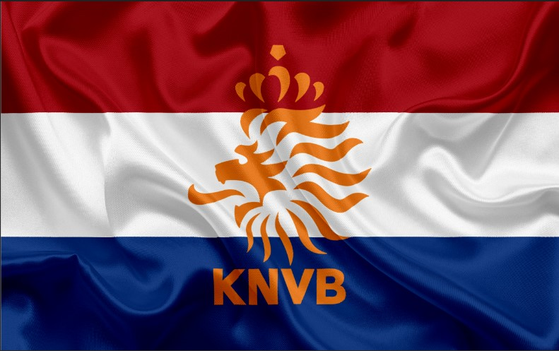
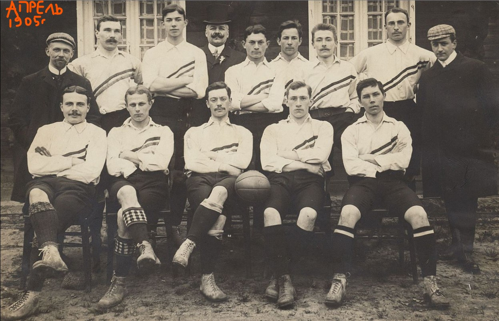
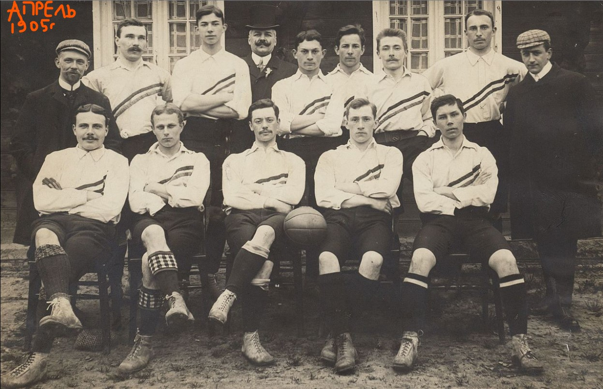

Some Netherlands Soccer
Dark days of Netherlands

Is it so obvious? True or False:
The capitan of NL soccer team Arjen Robben
https://www.bing.com/images/search?q=Arjen+Robben&form=IRBPRS&first=1
as good as Victor Onopko?
https://ru.wikipedia.org/wiki/%D0%9E%D0%BD%D0%BE%D0%BF%D0%BA%D0%BE,_%D0%92%D0%B8%D0%BA%D1%82%D0%BE%D1%80_%D0%A1%D0%B0%D0%B2%D0%B5%D0%BB%D1%8C%D0%B5%D0%B2%D0%B8%D1%87
- 1.
Wesley Sneijder
134 9811
2.
Edwin van der Sar
130 11463
3.
Frank de Boer
112 9271
4.
Rafael van der Vaart
109 6938
5.
Giovanni van Bronckhorst
106 8215
6.
Dirk Kuijt
104 6875
9.
Phillip Cocu
101 8001
10.
Arjen Robben
96 7394
11.
Memphis Depay
88 6579
Clarence Seedorf
- 12.
Georginio Wijnaldum
88 6429
13.
John Heitinga
87 7031
14.
- 7.
Robin van Persie
102 7317
8.
Daley Blind
101
- 6.
Robin van Persie
24 1965
7.
Giovanni van Bronckhorst
21 1993
8.
Dirk Kuijt
21 1518
9.
Frank de Boer
20 1730
10.
Ruud Krol
19 1800
11.
Marc Overmars
19 1240
12.
Ronald Koeman
18 1650
13.
Edgar Davids
18 1512
14.
John Heitinga
18 1365
15.
Jan Wouters
17 1524
16.
Frank Rijkaard
17 1465
17.
Nigel de Jong
17 1434
18.
Johnny Rep
17 1402
19.
Rafael van der Vaart
17 1014
- 20.
Aron Winter
17 969
- 21.
Jaap Stam

 
